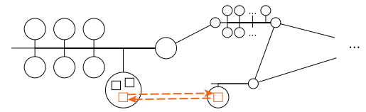
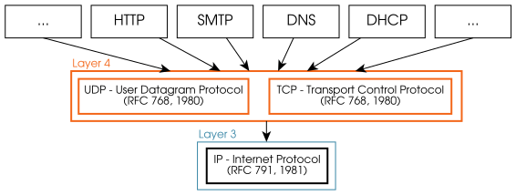
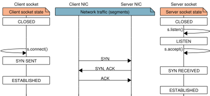
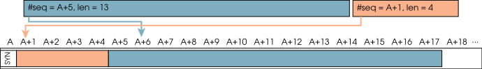
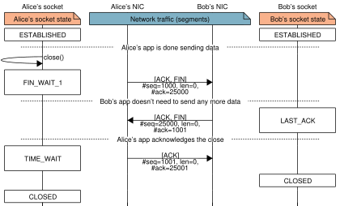
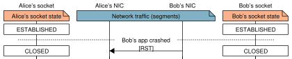

[9] Layer 4: Transport¶


Capabilities¶
The Transport layer communicates processes (programs) running in potentially different hosts. These processes are identified using Layer 4 addresses called ports.
The transport layer offers two different ways of communication: without connections (UDP) and with connections (TCP).
UDP doesn’t establish a connection with the destination host because the priority is to send some data payload as fast as possible. Instead, UDP sends packets called user datagrams directly to the destination, without expecting any sort of confirmation of reception from the destination’s UDP layer. UDP headers are simple and small as well keep the overhead of this protocol small.
TCP establishes a connection before sending any payload data to make sure both ends are ready. In addition, TCP expects acknowledgement (confirmation) of reception of every byte of payload data. Otherwise, data are retransmitted after a wait period, giving TCP reliability. TCP also uses a very clever way to limit the data exchange speed (flow control) so that fast and slow computers can coexist and communicate using TCP/IP. To provide all these features, TCP is a more complex protocol than UDP, uses larger headers and introduces a greater overhead.
Exercise 9.1
Which of the following applications do you think use UDP and TCP?
-
Multiplayer gaming
-
The WWW
-
BitTorrent
-
Video streaming
Protocols¶

The transport layer is at the top of the stack provided by the OS. Virtually all applications, and therefore their communication protocols, employ TCP, UDP (or even both) to exchange data over the net. Some important protocols that use TCP or UDP are shown in the previous figure.
Both TCP and UDP encapsulate their PDUs in IP datagrams. Generally, IPv4 is used, but IPv6 is also a possibility when available.
Note
Neither TCP nor UDP change in any way when IPv6 is used instead of IPv4, i.e., there is not a TCPv6 protocol. Instead, tcp6 and other expressions that include TCP and 6 refer to (regular) TCP over IPv6.
[9.1] Layer 4 addressing¶
TCP and UDP “addresses” are called ports and are \(16\)-bit unsigned integers. To humans, ports are expressed in two main ways:
-
As a number, e.g., 22, 80 or 443.
-
As the name of the service that typically uses that port, e.g., sshd, http, https.
When a Layer 4 PDU is received, the port in its header is used by the OS to know which of the running processes must receive the data. In turn, processes have to bind to a TCP port or to a TCP port (or both) to let the OS know the port they expect data from.
Only one process may bind to a port at a time for sending data, but TCP and UDP ports are treated independently:
-
If a process is bound to port
TCP/100, it will not receive UDP traffic to port 100. -
If a process is bound to port
TCP/100, another process (or even the same one) can bind toUDP/100.
Port number 0 is reserved, so the usable range or ports is 1–65535. Ports 1–1023 are only bound to processes with privileges (e.g., an http server), whereas client applications (e.g., an http client) can only bind to ports 1024–65535 based on their availability.
Exercise 9.2
How many different servers can be run in a machine to provide some feature to other hosts in the network?
[9.2] UDP – User Datagram Protocol¶
Packet format¶
The user datagrams used by UDP all have an \(8\)-byte header and have the following structure:

Exercise 9.3
-
What is the maximum payload size that can be sent in a single user datagram?
-
Is fragmentation desirable when using UDP?
Operation¶

UDP clients first create a socket and then directly send the user datagrams with sendto. There is no need to stablish or close a connection.
UDP servers must first bind to the port to be exposed to clients, and then receive each datagram in an individual call to the read function (recvfrom).
The bind function is purely internal to the server: it entails changes in its configuration (the table mapping port numbers and processes), but it does not generate any message.
Exercise 9.4
-
Can a UDP server work without sending any data through the network?
-
Can a client receive UDP traffic without binding to a port?
-
Can two different hosts bind to the same port and still exchange user datagrams?
Exercise 9.5
The following snippet of code shows a basic UDP server skeleton:
snippets/udpserver.py
import socket
port = 4567
s = socket.socket(family=socket.AF_INET, type=socket.SOCK_DGRAM)
s.bind(('', port))
while True:
user_datagram = s.recvfrom(1024)
print(f"Received UDP on {port=}: {user_datagram!r}")
-
Run the server, and in another terminal run
ncat -u localhost 4567and type some text to test the server. -
Implement the client end of the communication and test it against the server.
-
What important information do you get if you change
s.recvfromtos.recvmsg?
Note
This code uses regular UDP sockets, so it does not need administrator nor the CAP_NET_RAW capability, as it happened in Exercise 7.4, which required access to Layer 2 (e.g., Ethernet) sockets instead.
[9.3] TCP – Transport Control Protocol¶
Packet format¶
TCP PDUs are called segments. Their header is at least \(20\) bytes long, but can grow longer when certain options are used:

TCP headers contain eight \(1\)-bit flags. Of these, four are used to core TCP features addressed in the following sections. In the order they appear:
-
ACK: acknowledgement flag – “my ack number is valid”
-
RST: reset flag – “abort the connection”
-
SYN: synchronization flag – “I’m opening my end of the connection”
-
FIN: finalization flag – “I won’t send any more payload data”
Exercise 9.6
How can the receiving end know the size of the options and of the payload data?
Operation¶
TCP is a stateful protocol. TCP sockets transition between multiple states during communication. Each end of the communication has its own socket with its own state. Roughly speaking, connections can be classified as “Connecting”, “Connection established”, or “Closing connection”. Payload data is only meant to be exchanged while in “Connection established”.

TCP sockets can be in one of \(11\) states. These states, together with two \(16\)-bit counters (acknowledgement number and sequence number) enable the communication reliability expected of TCP. The meaning of these states and their transitions are explained in the following chapters.
[9.4] TCP: “Connecting”¶

When a socket is created, it beings as CLOSED. The end acting as a server begins listening to the service’s configured port and changes to the LISTEN state. Payload is not interchanged in this state.
A connection is established via a 3-way handshake using the SYN and ACK header flags. Each end of the communication reaches the ESTABLISHED state at a different time thanks to this handshake. Once they do, they are ready to exchange payload data.
Note
In TCP, both ends communicate as equal peers, it is unimportant who started the communication. That said, normally one end performs an “active open” (the client) and the other a “passive open” (the server).
Each end of the communication keeps track of its acknowledgement number (#ack) and sequence number (#seq) counters. The value of #seq is chosen separately (and typically randomly) by each end: \(A,\,B \in [0, 2^{32} - 1]\).
Once during the connection opening, each end sends exactly one segment with the SYN flag enabled. These segments exchange (synchronize) their initial sequence numbers \(A\) and \(B\).
Segments with the ACK flag enabled (all except for the client’s first segment) have their #ack set to “the next #seq expected from the other end”. This #ack should be red as “I have correctly received all segments corresponding to, but not including, #ack”.
The expected #ack and #seq numbers during the 3-way handshake are:
Exercise 9.7
-
How can one end know that the other end has received their chosen #seq?
-
Why does the third segment have its #seq set to \(A+1\) and not \(A\)?
-
What #seq will the next segment sent by the server have?
[9.5] TCP: “Connection established”¶
Streams and sequence numbers¶
TCP offers the illusion of a data stream: two pipes of data in the In and Out directions (a full-duplex connection). These pipes are reliable, i.e., mechanisms are put in place to prevent data loss, duplication and reordering.

Every byte of payload data is assigned a sequence number (#seq) in the TCP header. The first byte of payload data has #seq \(=A+1\), where \(A\) is the initial sequence number established during connection opening (see Section 9.4). Each new byte of data is assigned the next #seq (no gaps).
| #seq | \(A\) | \(A+1\) | \(A+2\) | \(A+3\) | \(A+4\) | \(A+5\) | \(A+6\) | \(A+7\) | \(A+8\) | \(A+9\) | \(\cdots\) |
|---|---|---|---|---|---|---|---|---|---|---|---|
| content | SYN | ||||||||||
'H' |
|||||||||||
'i' |
|||||||||||
'!' |
|||||||||||
'\n' |
|||||||||||
'H' |
|||||||||||
'o' |
|||||||||||
'w' |
|||||||||||
' ' |
|||||||||||
'a' |
\(\cdots\) |
Exercise 9.8
The #seq that comes after \(2^{32} - 1\) is \(0\). Why?
Payload data in TCP is always sent together with the first position they occupy in the stream and their length. For instance, inferring from the data shown above, two segments could be produced:
-
#seq \(= A+1\), len \(= 4\), data \(=\)
0x48 69 21 0a('Hi!\n') -
#seq \(= A+5\), len \(= 13\), data \(=\)
0x48 6f 77 20 61 72 65 20 79 6f 75 3f 0a
Exercise 9.9
What would be the #seq of the next segment with new payload data?
The receiving end of a TCP segment uses this information to stitch together a copy the data in the right order, even if the segments themselves arrive out of order. These data are passed on to the upper layer in a buffered fashion, or directly if the PSH (push) TCP flag is enabled.

Reliability and retransmission¶
TCP needs all transmitted data be acknowledged by the other end. Whenever some data is received in a TCP segment, the receiving end sends back a confirmation even if no data need to be sent at that point. The acknowledgement number (#ack) in the TCP header is used to tell the other end that all data up to (but not including) #ack.

Note
The #seq field of a TCP header refers to the sender’s sequence numbers. The #ack field refers to the receiver’s sequence numbers.
Payload data is included in TCP confirmations whenever any data is available. Conversely, the most recent value of #ack is included whenever any data is sent, i.e., acknowledgments piggyback payload data.
For instance, if Alice sends a \(25\)-byte request, Bob may send his \(10\)-byte response and the acknowledgement for Alice’s data in the same TCP segment. Alice needs to acknowledge Bob’s data, and soon sends a segment with no data if needed. Alice will resume sending data later when needed.
A TCP segment that is not acknowledged after a certain wait period is retransmitted. That time is decided by the OS on each end based on the average time it takes for a segment to be sent and a reply be received (the round-trip time, RTT).
Acknowledgements are sent even if that acknowledgement is identical to a previous one. This is because acknowledgements can also be lost.

Exercise 9.10
Assuming both ends are correctly following TCP:
-
Provide a set of valid values for (a) to (i).
-
How does the story change if (f) and (h) are identical/different?

Transmission limits¶
Data for transmission is often produced in bursts. We would like to send as much as possible as soon as possible, but there are two limits put in place in TCP.
The first limit, the Maximum Segment Size (MSS) is the maximum amount of payload data per segment allowed in a TCP connection.

The reason for this limit is to prevent fragmentation, for performance reasons, e.g., due to the elevated cost in time and memory of reassembly.
The MSS is \(536\) bytes in IPv4 by default, but can be negotiated with the TCP header Options during the connection opening phase. In IPv6, the default MSS is \(1220\) bytes.
Exercise 9.11
Ethernet has an MTU of \(1500\) bytes. Assuming datagrams travel through 2 Ethernet networks only:
-
What is the largest MSS that cannot cause fragmentation, MSS\(_\textrm{max}\)?
-
What is the overhead for MSS\(_\textrm{max}\) and for MSS\(_\textrm{max}\) + 1?
The second limit is to the maximum amount of payload data that can be sent before the other end replies with a new #ack: the so-called transmission window size. A host will not send data (however much is available, or how urgent it is) until those #ack arrive. When the slower computer replies, it does so always with the most recent #ack.
Exercise 9.12
What is the most likely MSS and transmission window sizes for this example?

The value of the transmission window is announced with each and every TCP segment: this value is a mandatory field of TCP headers. As the connection progresses, each host can change the value they announce based on their own load and necessities.
Note
Each host announces its own window size.
This limit is to prevent fast computers from overwhelming slower (or overworked) ones: without the limit the slower computer could need an infinitely increasing buffer size to store the not-yet-processed segments sent by the faster computer. With this limit in place, at the saturation point, both ends send segments at the same rate even if it takes vastly different times to produce and process them.
[9.6] TCP: “Closing connection”¶
FIN, #seq and #ack¶
Once the connection is ESTABLISHED, it remains so until either end decides to close it.
A node announces it is done sending data and wants to close the connection by sending a segment with the FIN flag active in the header. The other end may continue sending data, in which case it expects replies with updated #ack values. The other end may also choose to close the connection as soon as it sees the first FIN. Either way, if \(k\) bytes of data are sent and \(A\) is the initial #seq, then one segment with #ack \(= A+k+2\) is expected.
| #seq | \(A\) | \(A+1\) | \(\cdots\) | \(A+k\) | \(A+k+1\) |
|---|---|---|---|---|---|
| content | SYN | Data \(\cdots\) | \(\cdots\) | \(\cdots\) data | FIN |
Note how FIN flag occupies a sequence number itself and must be acknowledged like the SYN (see Section 9.4), e.g.:
Two-sided close¶
After one end closes its side of the connection, the other may continue sending data indefinitely. When the second side is done sending data, it also sends a segment with the FIN flag enabled.

Note that, in case the other end wants to end the connection as it receives a FIN segment, the closing process is condensed in \(3\) instead of \(4\) segments, e.g.,

Note
Note that:
-
Each end sends only one segment with the FIN flag, except for retransmission.
-
The segment with the FIN flag may contain payload data. In that case:
-
The payload data occupies sequence numbers before the FIN’s.
-
The other end must ACK both the payload data and the FIN.
-
One-sided close¶
Sometimes, connections must be terminated and there is not enough time or interest to go through the multi-step, two-sided connection closing process. This may be the case, e.g., when a process crashes, a given TCP o UDP port is blocked, and other situations of error.
In this scenario, the host that detected the abnormal situation simply sends a segment with its RST (reset) flag enabled. The receiving ends should not acknowledge the RST; instead, the connection resources are directly freed, e.g.,

Following the two-sided or the one-sided connection close procedure helps reduce the computation resources required to maintain the network stacks of billions of devices worldwide.
Note
A connection cannot be re-open after it is closed. The RST flag could have been more accurately called “forceful termination”.
Exercise 9.13
The following diagram displays the \(11\) TCP states and (almost) all possible state transitions.

-
Indicate the life cycle of an HTTP server’s socket as a path in the graph.
-
Indicate the life cycle of the corresponding HTTP client’s socket as a path in the graph.
-
The
CLOSINGstate is not described in the previous sections. What do you think is its purpose?
Note
This diagram is adapted from “TCP/IP Illustrated, Volume 2: The Implementation,” by Gary R. Wright and W. Richard Stevens.